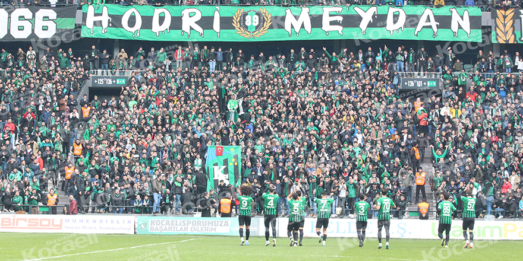
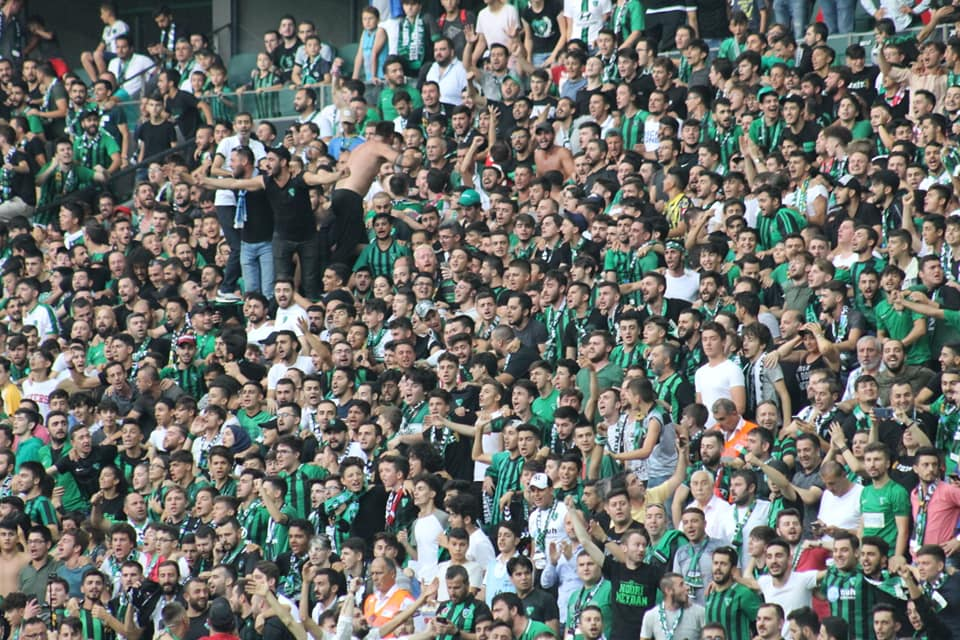

Fotoğraf Albümü




Kocaelispor 1966 tarihinde 3 takımın birleşmesiyle kurulmuştur.Üç takımın birleşmesiyle kurulan Körfez ekibi Kocaelispor, büyük transferlerle 1966-1967 sezonunda Türkiye 2. Ligi’nde yeşil sahalara girdi.O yıl Kocaelispor Kulübü yöneticileri, kurulan bu kulübün bir semt takımı olmadığını şehrin takımı olduğunu söylediğinde, Kocaeli halkından büyük destek gördü. Bu destekle 1979-1980 sezonu Süper Lig’e çıkma başarısı gösterdi. 8 yıllık Süper Lig macerasından sonra 1.Lige düşen Kocaelispor, 1991-1992 sezonunda tekrardan Süper Lig’e yükseldi. Yeşil siyahlılar, 1991- 1992 sezonundan 2002-2003 sezonuna kadar Süper Lig’de mücadele verdikten sonra 2003-2004 sezonunda tekrardan küme düşerek 2008-2009 yılına kadar 1.ligde mücadele verdi. Sürekli iki küme arasında mekik dokuyan Kocaelispor, son olarak 2008-2009 yılında Süper Lig’e çıktı. Kocaelisporun tarihinde iki tane Türkiye kupası, üç tane 1. lig şampiyonluğu,bir tane 3. lig şampiyonluğu ve bir tane bölgesel amatör lig şampiyonluğu bulunmaktadır. Ayrıca İzmit halkı bu takıma yürekten bağlı olup hiçbir koşulda yalnız bırakmamıştır. Bu halk için nefes almak ne ise Kocaelisporu uzaktan yakından farketmeksizin desteklemekte o'dur. Yakın zamanda eski günlerine dönmesi dileğiyle..